Spell's facelift: two looks to pick
The Spell theme's facelift is built. Two looks are left that change the brand's own colours, so they're yours to pick: here they are side by side, in real screenshots.
debut -- Spell's public preview. Its phase P19, Spell Facelift, gives the Spell theme a
fresh look and makes all its text readable.Every picture is a real screenshot of this checkout, at 1440 wide, with the option's CSS laid on for the shot.
- Nothing is changed in the code yet: what you pick gets built in P19.
- Each option's "How it's built" fold has the exact CSS.
- The editor pictures are Solitaire in Debug, with every side bar open and a card picked.
- Click a picture to see it full size.
In light, the Spell theme's page is almost white (#fcfdff) and its panels are white. So a panel shows only by its thin edge and soft shadow. In dark, the panels stand a clear step off the page. Should the light page go a shade darker (#f3f5fd), so the panels stand off it the same way?
Only light changes: dark stays as it is.
The editor
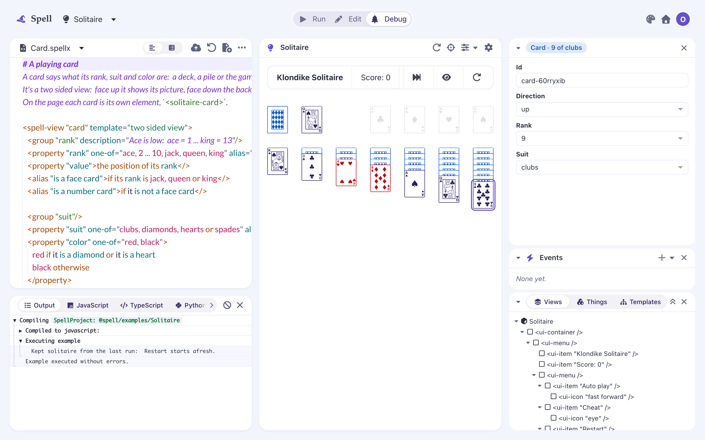
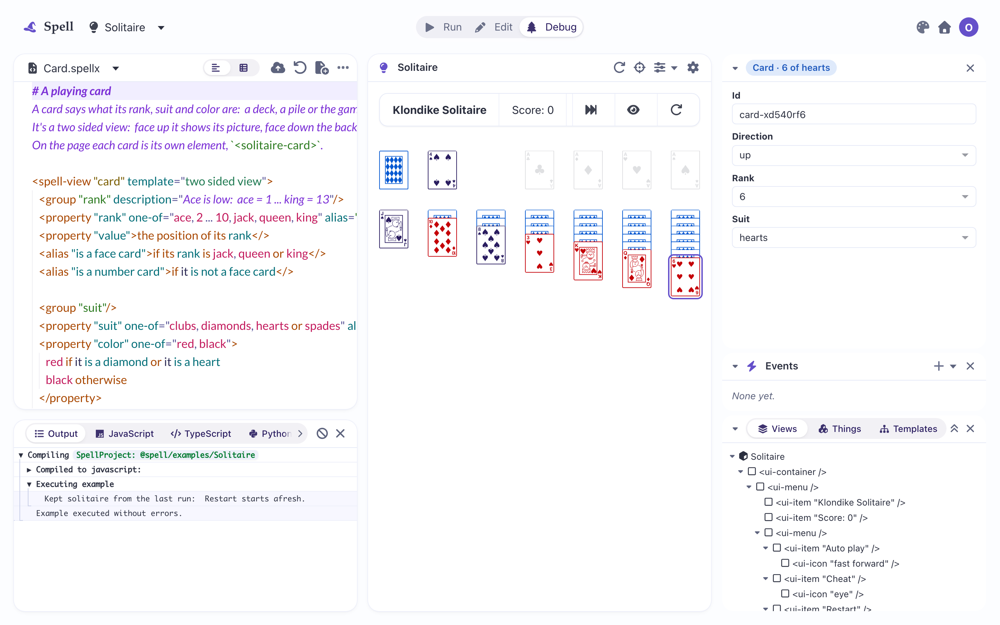
Spell UI's Button page
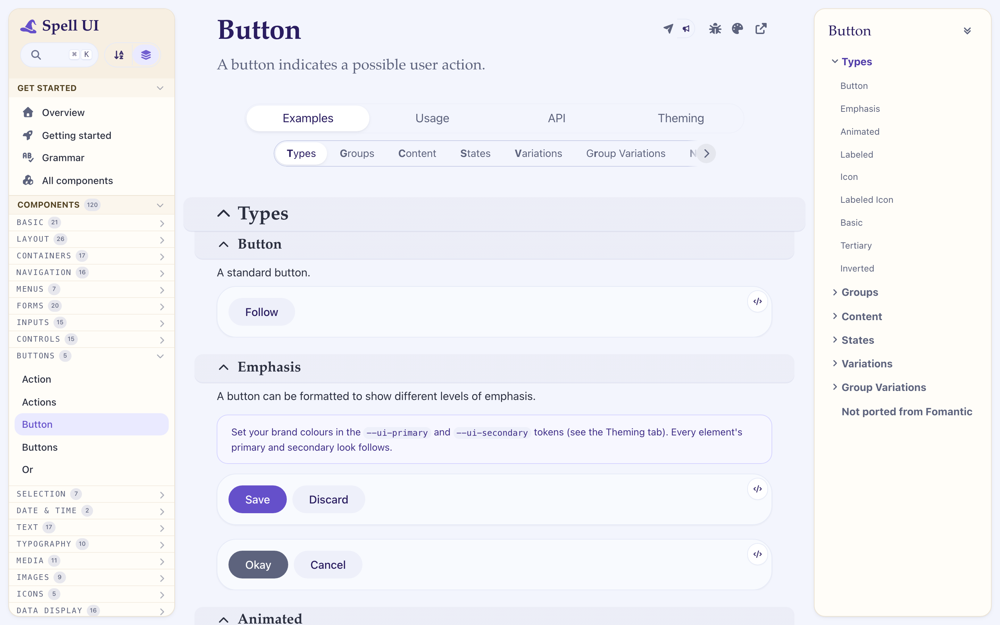
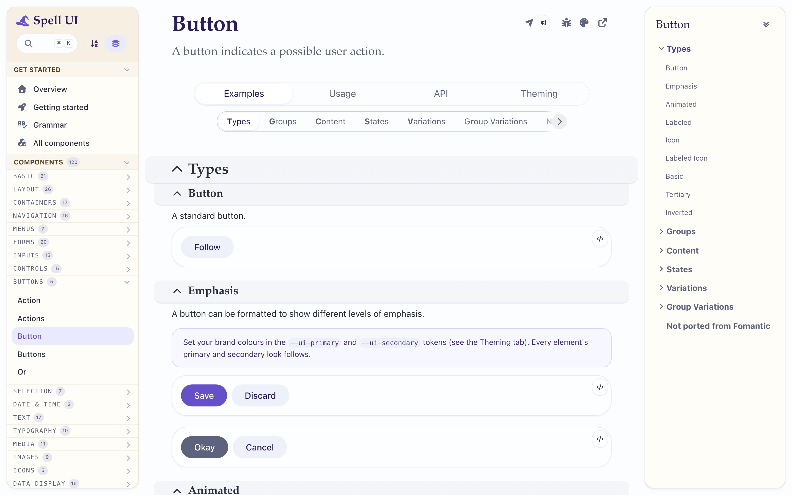
An epic page (this epic's)
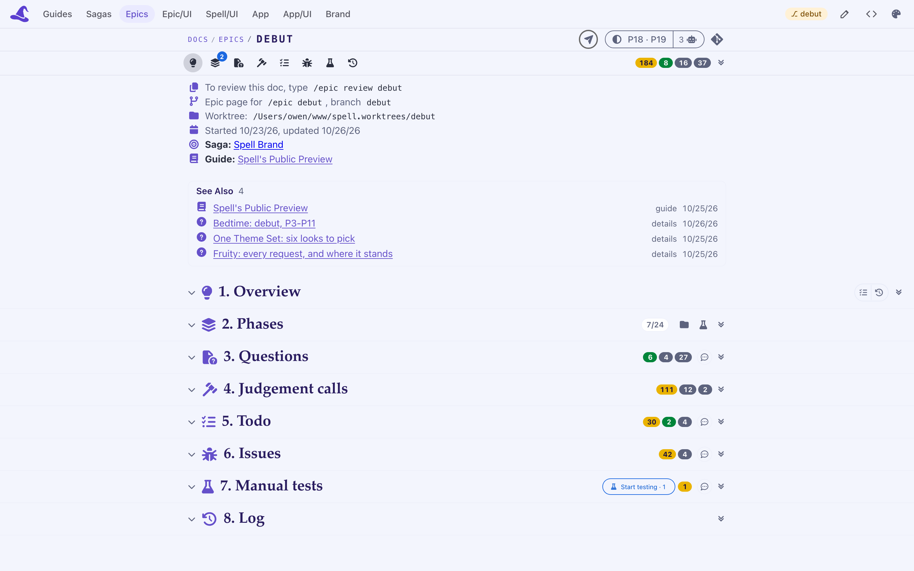
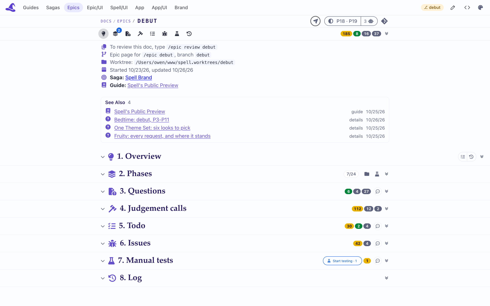
Recommended: the white panels stand off the page in light as they do in dark, so the editor's three panes read as three cards.
- It changes the brand's own page colour, a little.
-
Code on the page itself (not in a panel) is drawn on this same colour. In A's epic page picture,
the grey fill behind
/epic review debutdisappears. Building A would move that fill a step darker too (#eef0fa), so code keeps its fill.
--ui-background: light-dark(var(--spell-brand-75), var(--spell-violet-950)); /* was brand-25 in light */
The brand page's own colour stays. The panels show by their thin edge and shadow only, which is quieter but flatter.
A secondary button is the one a page shows beside its main action, for the second most likely thing to do ("Okay" beside "Cancel"). In the Spell theme, it's a solid slate grey-blue with white text. The Spell design system's boards draw it white, with a thin edge and dark text. Which should it be?
The Button page's Emphasis examples: Save is primary, Okay is secondary.
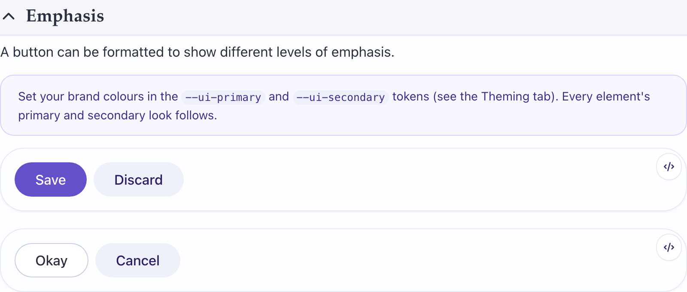
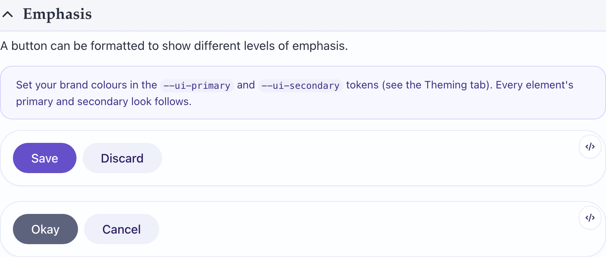
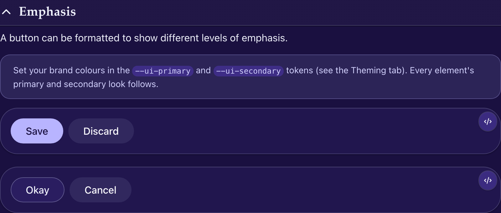
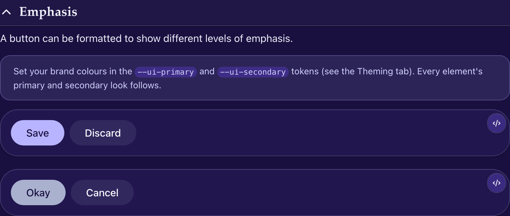
The editor's theme editor, whose preview shows a secondary button right beside a basic one (a basic button is the plain outlined kind).
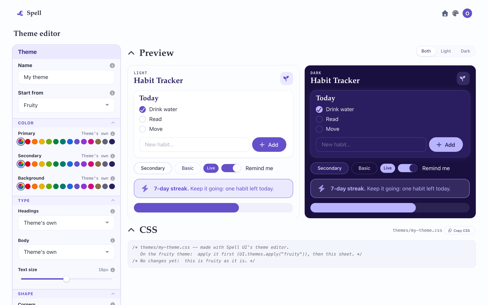
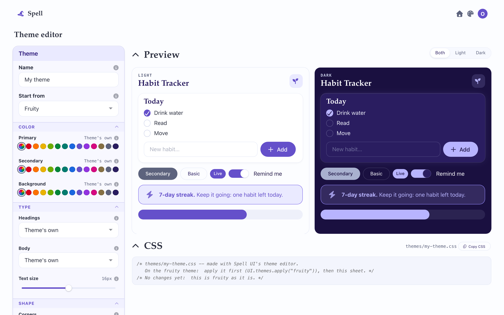
No epic page and no other part of the editor shows a secondary button today.
Recommended: it matches the design system's boards, and sits quietly beside the violet primary.
- It looks almost the same as a basic button: see the theme editor's preview, where "Secondary" and "Basic" sit side by side.
- Only buttons change. Secondary labels, text and icons keep the slate colour.
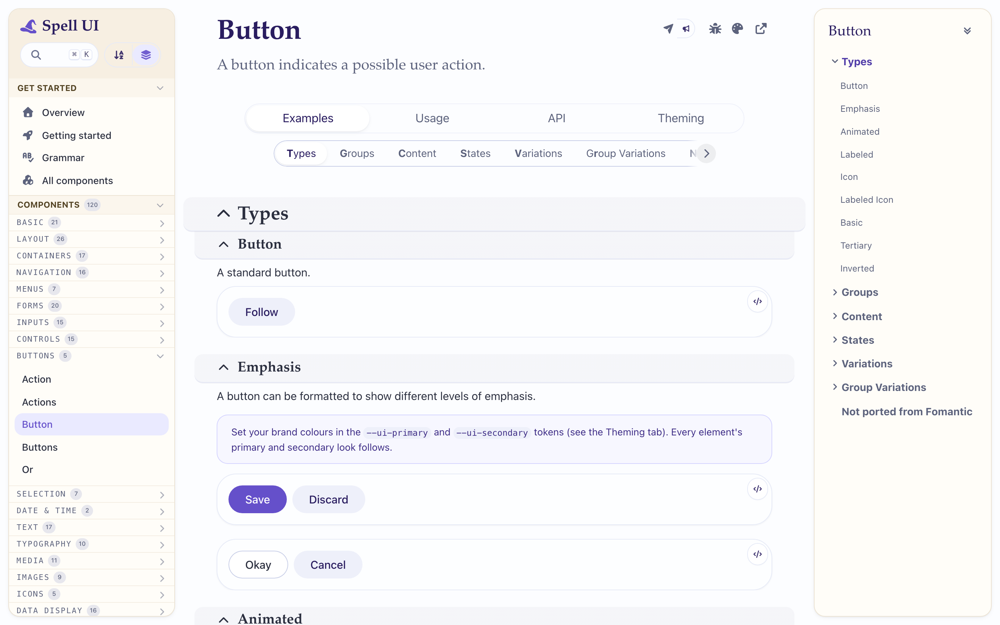
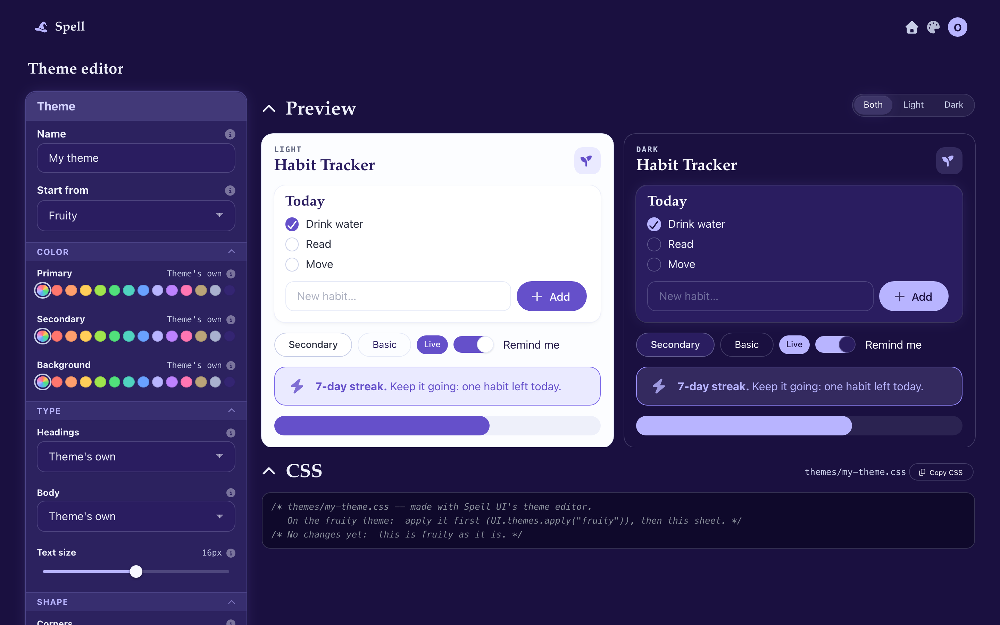
ui-button[color="secondary"]:not([appearance], [inverted]) {
--ui-secondary: var(--ui-surface); /* white; the panel colour in dark */
--ui-secondary-on: var(--spell-text-body); /* dark text */
--ui-secondary-hover: var(--ui-surface-muted);
--ui-secondary-focus: var(--ui-surface-muted);
--ui-secondary-down: var(--ui-surface-strong);
--ui-secondary-active: var(--ui-surface-strong);
--_button-edge: inset 0 0 0 1px var(--ui-border-color-strong); /* the thin edge */
}
This is how the picture was made. Built for real, it would be a setting the button reads, not a rule reaching into its insides.
A filled button, a step quieter than the violet primary, and clearly different from a basic one. The design system's boards and the theme differ here.

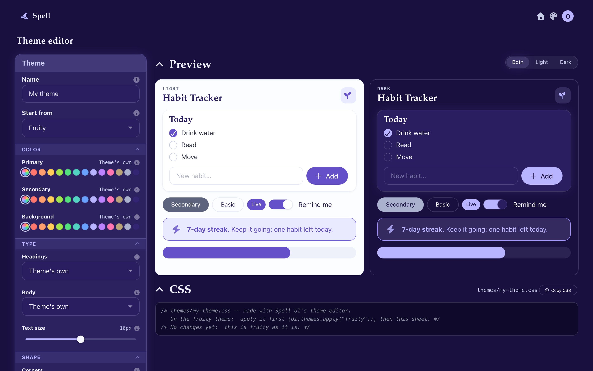
--ui-secondary: var(--ui-grey); /* slate, white text */